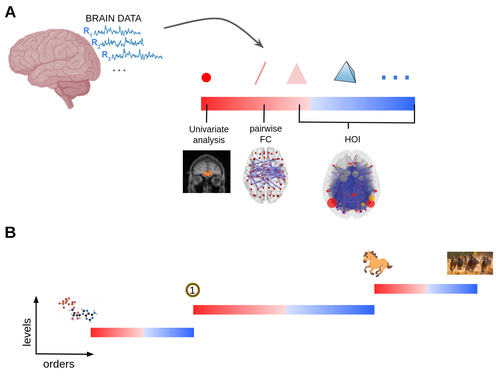
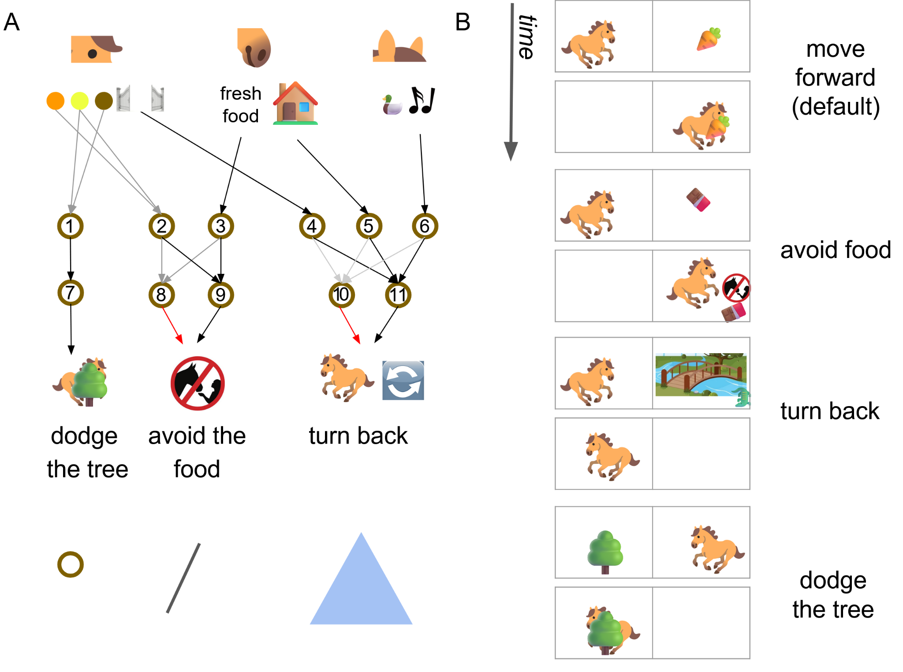
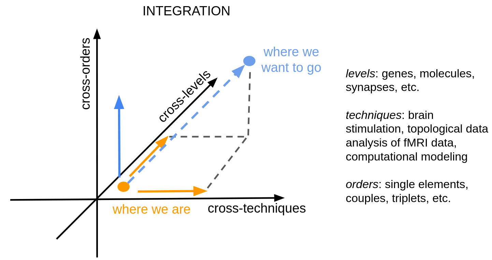

Paper note
How can the mind emerge from the brain?
A short guided tour of A taxonomy of neuroscientific strategies based on interaction orders: what it suggests, why it may matter, and how brain data might be read in a broader way.
One practical way to approach the old question "how does mind emerge from brain?" is this: collect brain signals, then compare them with behavior, thoughts, symptoms, or clinical outcomes. This has been one of the more productive directions in modern neuroscience.
In simple terms, researchers record activity while people do something, then ask what in the brain changes with the task. For example, some frontal areas increase activity in reward-seeking contexts. In other cases, specific neurons respond strongly to a specific person (face or voice). So a core ambition is to connect brain dynamics to lived cognition and pathology.
From Many Methods to One Organizing Map
Over time, many solid strategies were developed. A classic one compares task versus rest, region by region, to see what each area contributes. Another studies pairwise links between regions. More recent methods go further and look at interactions among triplets or larger groups.
The taxonomy paper puts these approaches on one map, using a single idea: a spectrum of interaction orders.
A compact table of strategies
| Interaction order | What is modeled | Typical strategy | What you gain |
|---|---|---|---|
| Order 1 | Single region / neuron | Task-vs-rest univariate effects | Local functional specialization |
| Order 2 | Pairs of regions | Functional connectivity | Co-variation and network links |
| Order 3+ | Triplets and groups | Higher-order interaction analysis | Synergy, redundancy, collective rules |
| Whole system | Many elements at once | Multivariate/system-level models | Global integration constraints |

The Horse Example: Why Orders Matter
To make this intuitive, the paper introduces a toy model: Artemis the horse. The point is not realism. The point is to show, step by step, that some behaviors are visible at low order, while others may only appear when multiple signals are read together.
Imagine you are the neuroscientist in this experiment. You can only observe the middle layer of Artemis' neural system, and you want to explain what she does: move forward, dodge a tree, avoid food, or turn back. If you inspect one neuron at a time, you may get useful clues, but not the full logic.
In the paper this is very concrete. Order 1 (single neuron): one neuron can already explain one behavior. For example, neuron 1 is enough to track tree-dodging. But for neurons 2, 3, 4, 5, and 6, single-neuron reading may remain ambiguous.
Order 2 (pairs): now look at neurons 2 and 3 together. A clear rule appears: Artemis avoids food when exactly one is active; she does not avoid when both are active or both are silent. This is XOR-like logic ("one yes, one no"), and you cannot see it by looking at neuron 2 or 3 alone.
Order 3 (triplets): then move to neurons 4, 5, and 6 as a group. Here the meaningful pattern appears at triplet-level: Artemis turns back in mixed combinations, but not when all three are ON together or all three are OFF together. Again, the rule lives in the joint state, not in any single unit.
This may be the central lesson of the example: different behaviors can "live" at different orders. If we only analyze one slice of the spectrum, we may miss the mechanism that matters most for that behavior.

The same intuition appears in everyday computing. Different questions require different levels:
- Low level: coffee spills into the laptop. You care about hardware and electrical damage.
- System level: you change operating-system version and need a reboot. You care about OS-level constraints.
- Whole-use level: you want to print a PDF. You need the full chain to work: app, OS services, drivers, printer.
No single level is "the true one" for every problem. Brain science may be similar: different questions can become clearer at different interaction orders.
Interaction Order as a New Axis
Once this clicks, interaction order may stop being just a technical option and become a scientific axis, alongside space (where in the brain) and time (when dynamics unfold).
The broader proposal is integration: if we want stronger explanations of cognition and pathology, we may need to combine these dimensions rather than optimize only one.

Bottom line: to understand how mind emerges from brain, we may need to move across interaction orders, not only across regions, time scales, or tools.